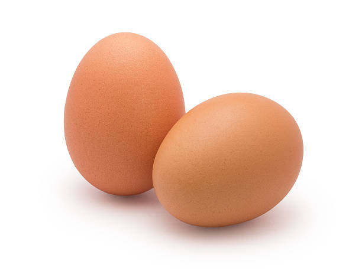
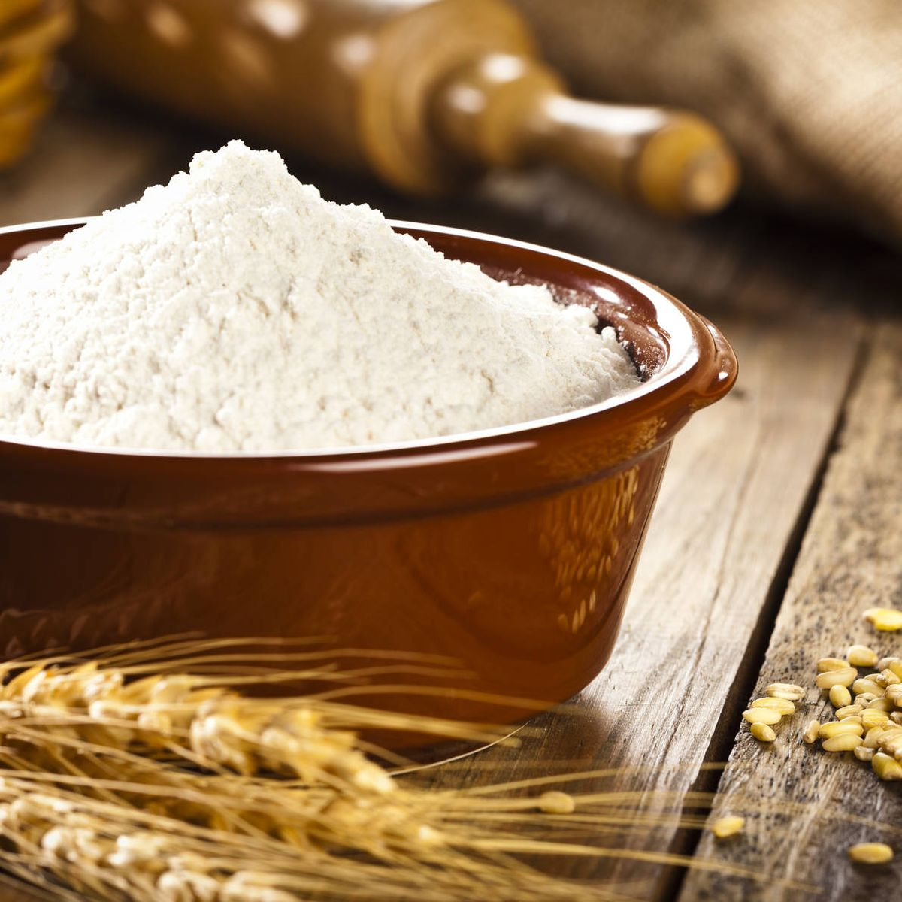
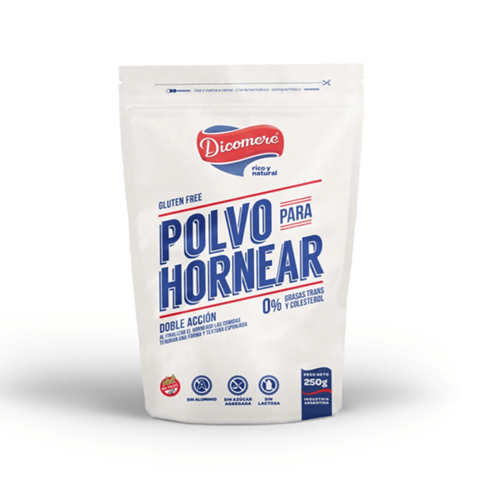
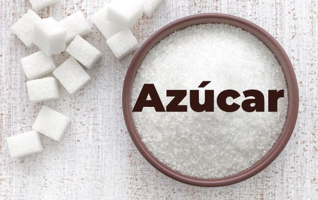
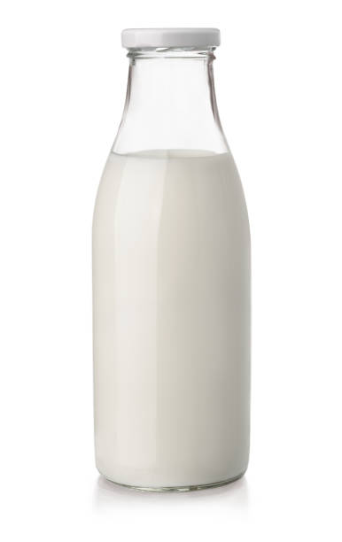
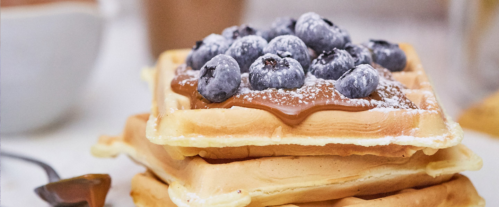

Wafles caseros con un toque dulce: ¡dulce de leche!!😋😋
Un buen wafle debe tener una corteza dorada y crujiente, y un interior ligero y esponjoso. Su sabor debe ser dulce, pero sin empalagar: ¡una dulzura justa y equilibrada!
Se pueden acompañar con frutas, cremas o incluso helado 😋, pero hoy los vamos a disfrutar con un clásico irresistible: ¡dulce de leche!
🛒 Ingredientes:
- 2 huevos grandes

- 2 tazas de harina

- 1 cucharadita de polvo de hornear

- 1/4 cucharadita de sal

- 2 cucharadas de azucar

- 1 taza de leche

- 80 gramos de manteca

- dulce de leche

👨🍳 Paso a paso
- Mezclá los ingredientes secos.
- Agregá la leche, los huevos y unir.
- Incorporar la manteca derretida. Dejar reposar por 20 minutos.
- Colocar la mezcla en la wafflera enmantecada
- Cocinar hasta que estén doraditos.
- Servir con dulce de leche y arandanos espolvoreados con azucar impalpable!.
📸 ¡Así deberían quedar!!

🔗 Código en GitHub
Podés clonar esta receta desde mi repositorio de GitHub: https://github.com/tu-usuario/receta-wafles